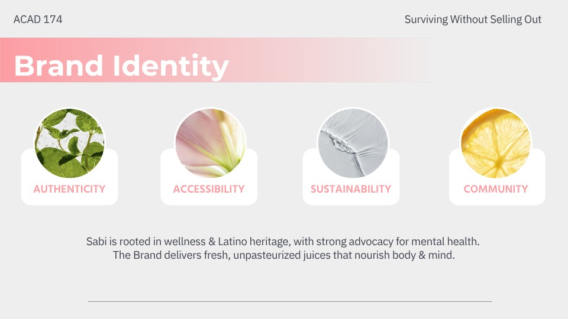
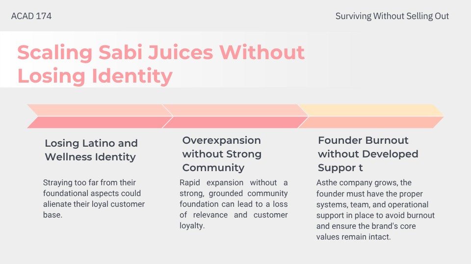
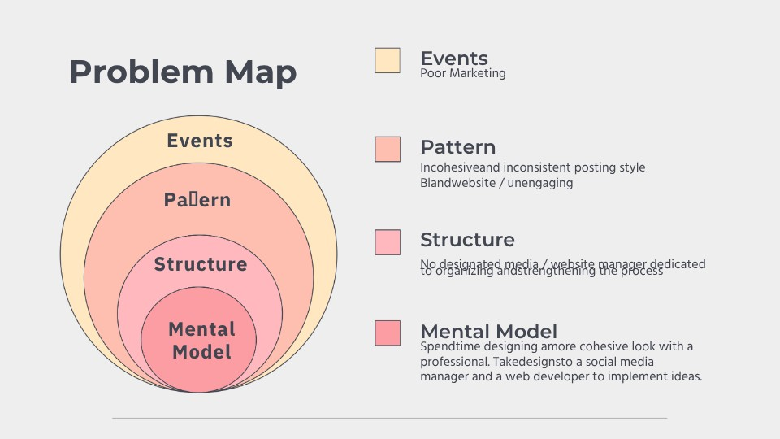
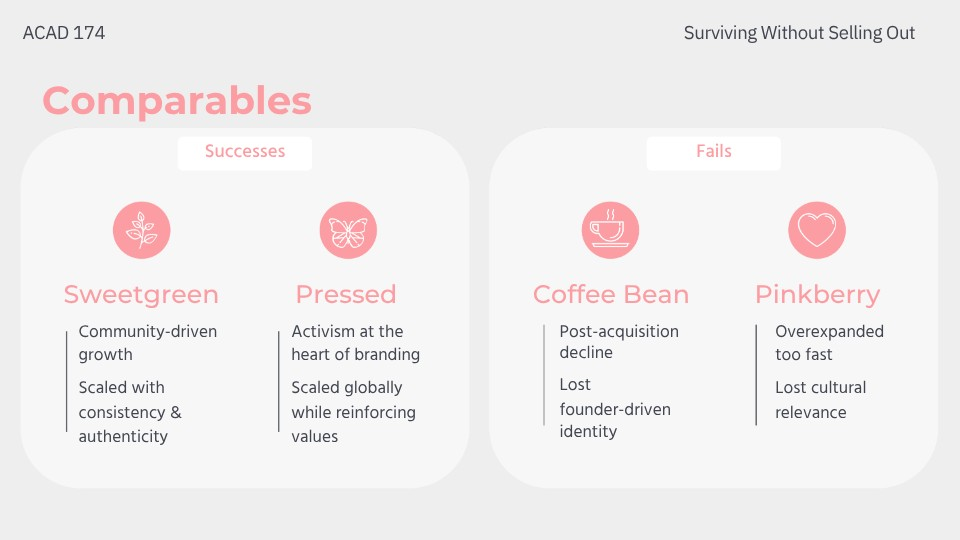
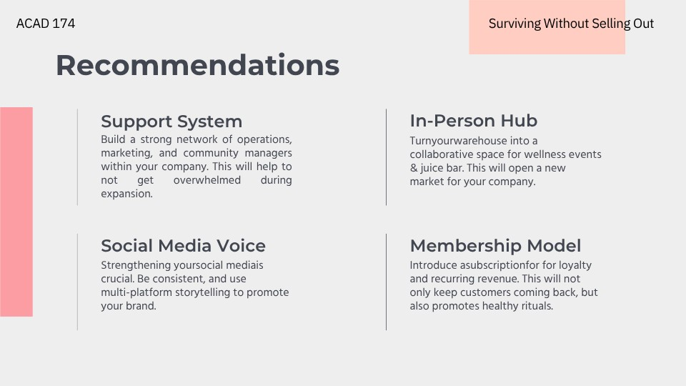
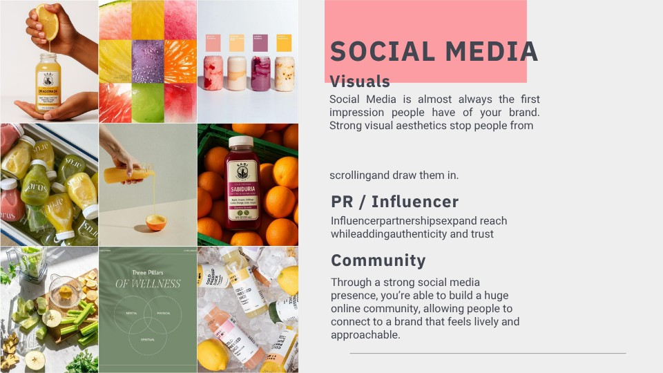
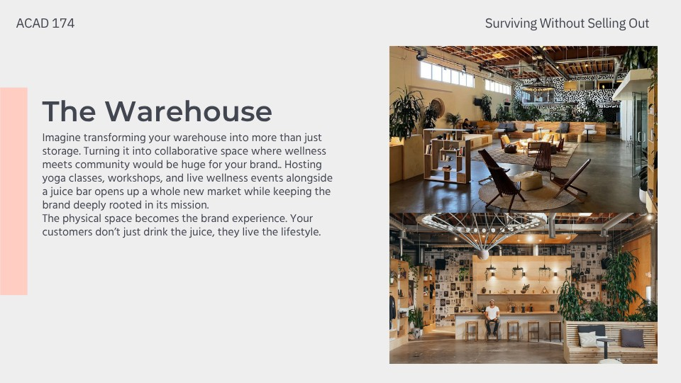
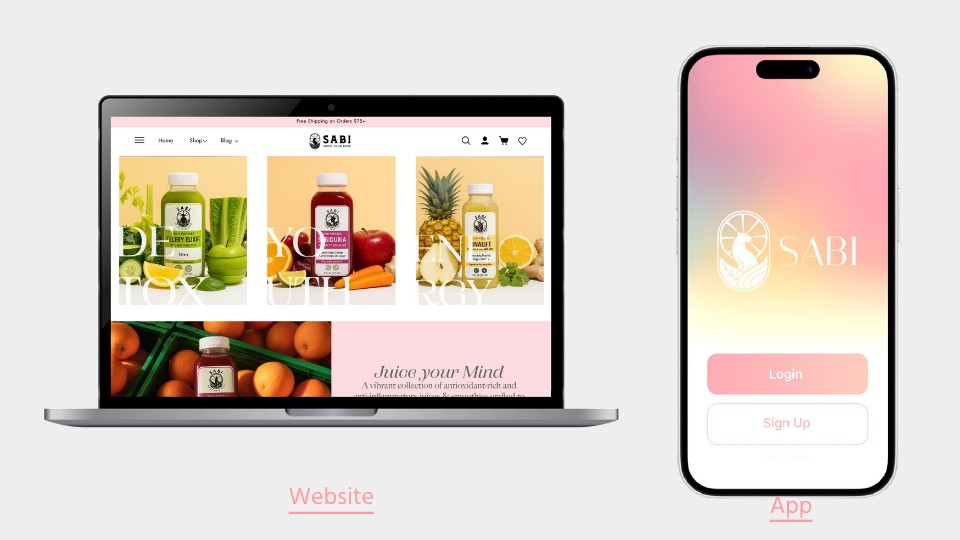
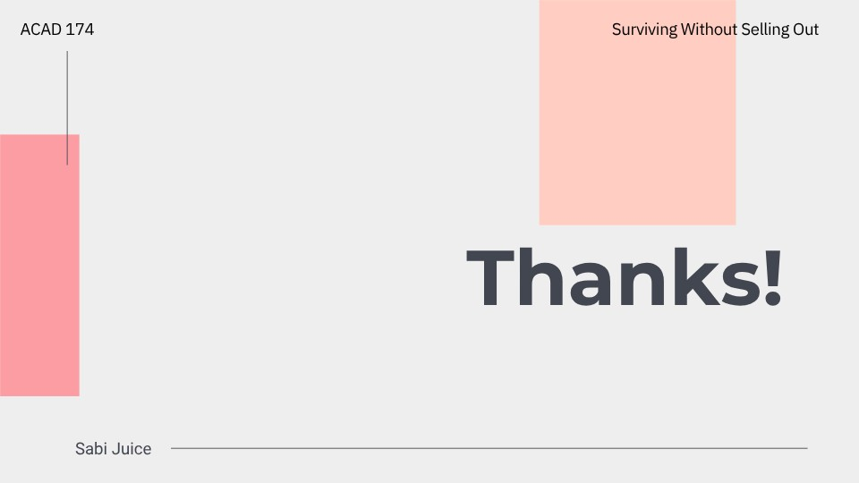

Brand / Strategy
Sabi.
A fresh perspective.
Sabi Juice Pitch focused on advising a company on how to scale sustainably. This project focused on how to make an enterpreneur-centered business expand past the need for the creator to do everything.
My team worked together to determine that delegating and expansion through social media was a valid strategy.
SECTION 01 / 10
Growing without losing the reason people care
This strategy pitch explores how Sabi could scale while preserving its identity. The opening connects a fresh visual language with a broader story about wellness and community.

SECTION 02 / 10
Starting with the brand’s foundations
The brand study identifies authenticity, accessibility, sustainability, and community as guiding values. These give the growth recommendations a consistent point of reference.

SECTION 03 / 10
Identifying the risks of growth
The analysis considers cultural identity, overexpansion, and founder support. The central question is how growth can reinforce a brand’s purpose instead of stretching it thin.

SECTION 04 / 10
Looking beneath the visible symptoms
The problem map connects individual events to recurring patterns, organizational structures, and assumptions. That structure helps move the discussion from surface-level marketing changes toward deeper support.

SECTION 05 / 10
Learning from comparable brands
The comparison looks at how other brands have maintained or lost their identity while growing. It provides reference points for the recommendations rather than a prediction of Sabi’s future.

SECTION 06 / 10
Turning the diagnosis into recommendations
The proposal brings together a support network, a physical hub, a stronger social voice, and a membership model. Each recommendation addresses a different part of the growth challenge.

SECTION 07 / 10
Building a social presence around community
The social direction emphasizes visual consistency, creator partnerships, and a lively community presence. The goal is to connect brand recognition with a reason for people to participate.

SECTION 08 / 10
Reimagining the warehouse as a place to gather
The physical-space concept proposes combining the brand’s product with wellness activities and events. It extends the brand experience beyond a transaction.

SECTION 09 / 10
Bringing the strategy into digital touchpoints
The website and app mockups show how the proposed identity could appear across devices. They make the strategic recommendations more concrete through familiar customer interfaces.

SECTION 10 / 10
A consistent identity, with room to grow
The closing slide returns to the pitch’s central tension: scaling while staying recognizable. The recommendations remain proposals for how that balance could be approached.
